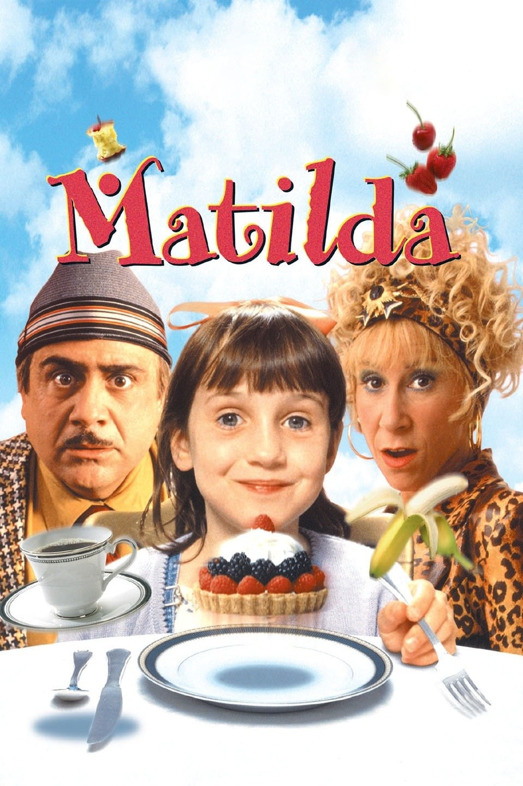
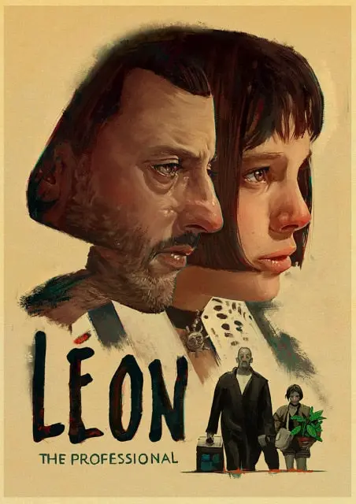

This is my favourite anime. I love the beautiful images and the story. Oh also the musics! It was probably the first movie that I've ever watched in a cinema.
I watched it on HBO at home with my mom. I think back then I probably related myself to the main character-Matilda.
It's a French move starred by Jean Reno and Natalie Portman. She was only 12 years old when she was playing in this movie!